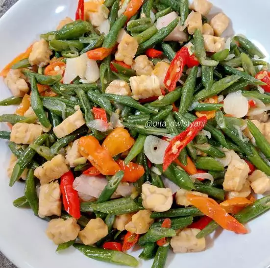

Tumis Kacang Panjang Tempe

Bahan
- 1/2 ikat kacang panjang, iris serong
- 1/2 papan tempe, iris
- 2 siung bawang merah
- 2 siung bawang putih
- 10 buah cabai rawit merah
- 4 buah cabai keriting
- 2 ruas lengkuas
- 1/4 sdm garam
- 1/4 sdm kaldu jamur
- 1/2 sdm gula
- 1/2 bungkus Saori saus tiram
Cara Membuat
- Goreng tempe hingga kecokelatan kemudian sisihkan.
- Tumis bawang dan lengkuas dengan minyak secukupnya hingga wangi.
- Setelah itu masukkan irisan cabai.
- Masukkan irisan kacang panjang, beri air secukupnya dan masak hingga kacang panjang lunak.
- Beri bumbu-bumbu aduk merata, setelah itu masukkan tempe yang sudah digoreng.
- Koreksi rasa dan siap disajikan.